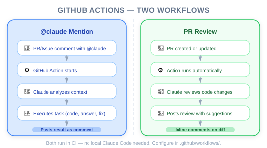
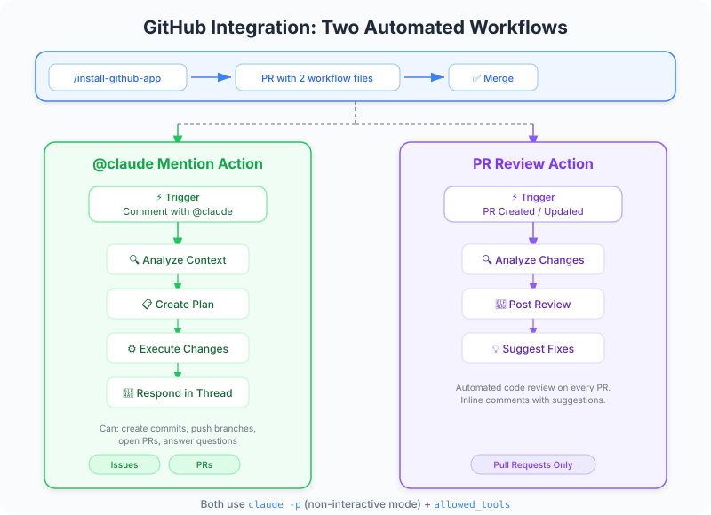
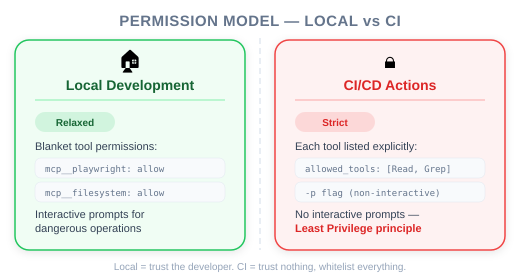

| Item | Details |
|---|---|
| Exam Coverage | D3 — Claude Code Configuration & Workflows (20% of exam) |
| Task Statements | 3.6 ★★★ (CI/CD integration), 2.4 ★★ (MCP integration), 1.1 ★ (agentic loops) |
| Course Source | claude-code-in-action / 04-integrations / Lesson 13 |
Claude Code's GitHub integration turns Claude into an automated team member that lives inside your GitHub workflow. Two capabilities: (1) @claude mention in issues/PRs for interactive task execution, (2) automatic PR review on every pull request. PMs need to understand this because it defines how AI fits into code review and CI/CD processes — and what governance is required around permissions.
@claude mentions change how developers interact with issues and PRs
| Role | Human Equivalent | Claude GitHub Integration |
|---|---|---|
| PR Reviewer | Senior engineer reviewing code | PR Review Action — automatic, consistent |
| Issue Responder | On-call engineer triaging bugs | @claude mention — instant, autonomous |
| QA Tester | Manual test before merge | Claude + Playwright — automated visual testing |
| Scribe | Engineer documenting findings | Claude posts detailed reports in issues/PRs |
🎯 Core Exam Philosophy (PMs must remember)
- Automated code review catches issues structurally — it runs every time, not just when someone remembers
-pflag = non-interactive mode — Claude runs without human approval, so permissions must be explicit- Architecture > Prompt — structural CI integration over asking developers to remember to review
@claude Mention — Interactive Task ExecutionAnyone can mention @claude in an issue or PR comment to trigger Claude. Claude will:
- Analyze the request
- Create a step-by-step plan (visible in the comment)
- Execute the plan (run code, test the app, read files)
- Report results back in the issue/PR
PM Use Case: Bug triage — a QA engineer screenshots a bug, mentions @claude, and Claude investigates, tests, and reports findings without developer involvement.
Every PR automatically triggers Claude to review the changes. Claude:
- Analyzes the diff
- Checks for potential issues
- Posts a structured review
PM Use Case: Quality gate — every PR gets a baseline review regardless of team availability. This catches structural issues that humans might miss under time pressure.
💡 PM Decision Framework
Think of these as two different product capabilities:
-@claudemention = on-demand AI agent (reactive, user-triggered)
- PR review = automated quality gate (proactive, always-on)
You do not need to write YAML, but you should understand what each configuration layer controls:
| Config Layer | What It Does | PM's Concern |
|---|---|---|
custom_instructions |
Tells Claude about the CI environment | Ensure Claude knows about your test infrastructure |
mcp_config |
Gives Claude access to tools (e.g., Playwright) | Determines what Claude can do |
allowed_tools |
Controls which tools Claude may use | Security governance — each tool explicitly listed |
| Setup steps | Prepares the environment before Claude runs | Ensure the app is running for Claude to test |
💡 PM Takeaway
The
allowed_toolsconfiguration is the permission boundary. In CI/CD, every single tool must be individually listed — there is no "allow all" option. This is a deliberate security design. If your team adds new MCP tools, theallowed_toolslist must be updated.
| Area | Before GitHub Integration | After GitHub Integration |
|---|---|---|
| PR Review Coverage | Depends on reviewer availability | 100% — every PR gets reviewed |
| Bug Triage Response | Hours (wait for dev to investigate) | Minutes (Claude investigates immediately) |
| Code Quality Consistency | Varies by reviewer | Standardized — Claude checks every PR the same way |
| Developer Context Switching | Frequent (review requests interrupt flow) | Reduced — Claude handles first-pass review |
@claude, Claude posts a checklist of steps it will take. This transparency is important for team trust.Your team wants to add automated PR reviews using Claude Code in GitHub Actions. Engineers ask whether they can use the same permission configuration as local development (mcp__playwright in .claude/settings.local.json). What do you tell them?
allowed_tools. The blanket server-level permission is not available in CI modemcp__playwright to .claude/settings.json (project shared) insteadYour QA team reports bugs by creating GitHub issues with screenshots. Currently, a developer must manually investigate each bug. How can Claude Code's GitHub integration help?
@claude mention support so QA can trigger Claude to investigate bugs directly from the issue, complete with browser testing via PlaywrightYour team has set up Claude Code PR reviews in GitHub Actions. Engineers want Claude to also access Playwright to visually verify UI changes during review. What configuration changes are needed?
mcp_config — Claude will automatically have accessmcp_config, add a setup step to start the dev server, list each Playwright tool in allowed_tools, and add custom_instructions explaining the running environmentmcp__playwright to the allow listcustom_instructions